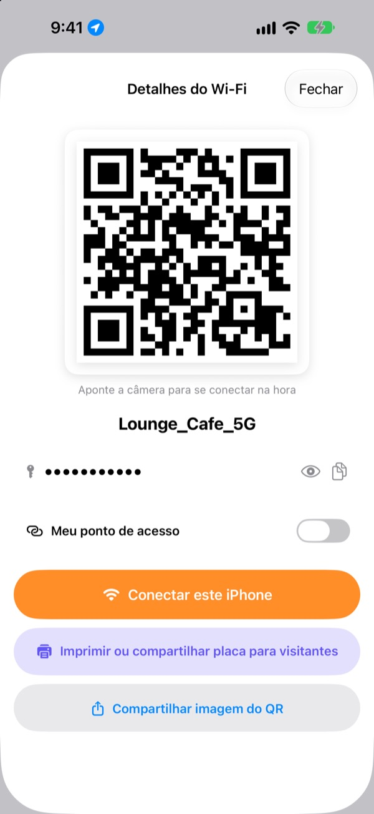
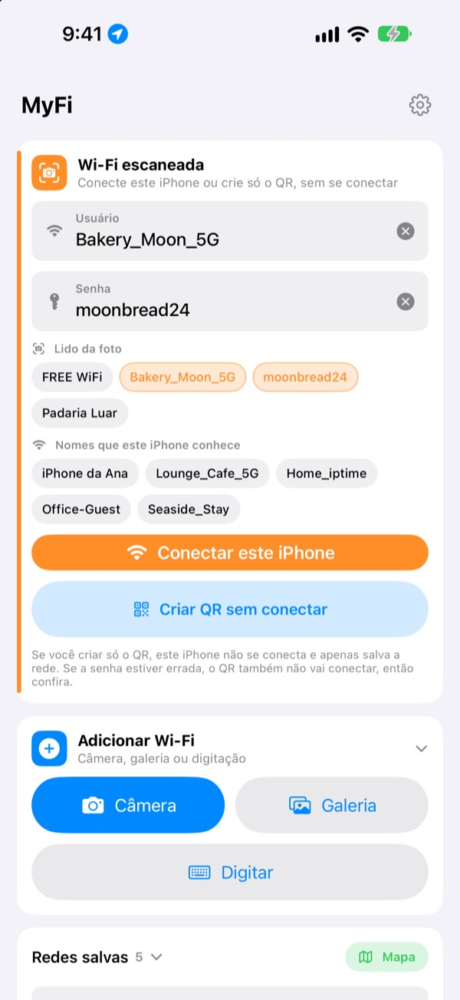
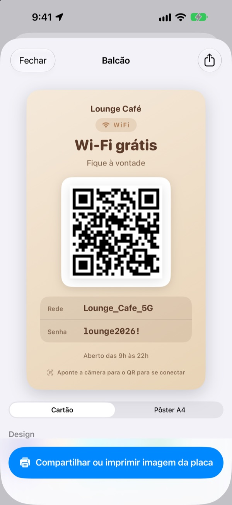
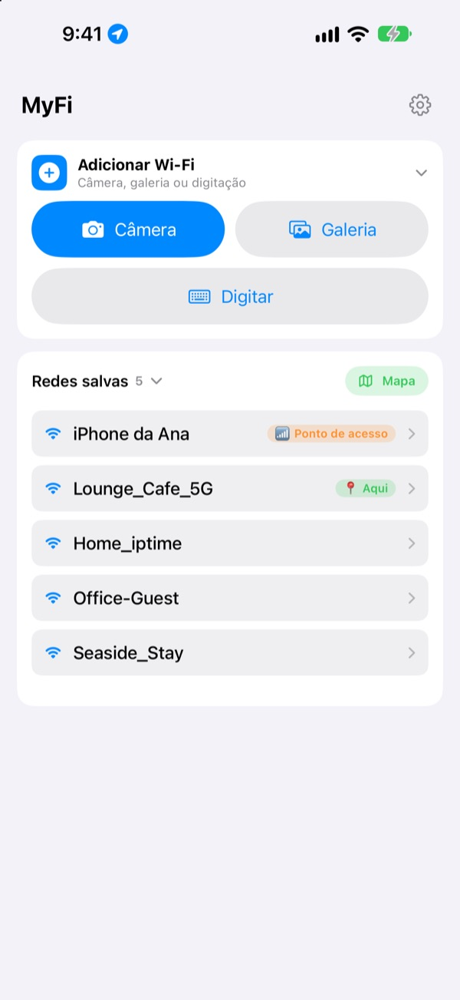

Chega de ditar a senha.
Mostre um código QR.
Os amigos apontam a câmera e já estão conectados. A placa na parede do café? Uma foto e este iPhone conecta. Acabaram os erros de digitação ao copiar.
Todos os recursos são grátis. iPhone com iOS 17 ou posterior.

Crie o código QR do seu Wi-Fi
Mude o nome ou a senha e a placa se atualiza na hora. Aponte a câmera de um celular e vai aparecer de verdade o convite para conectar.
"Qual era a senha do Wi-Fi?" Quantas vezes hoje?
Você dita e erra as maiúsculas. Copia a placa da parede e confunde 0 com O. Depois explica tudo de novo. O MyFi resume isso a uma foto e um código QR.
Uma foto e pronto, conectado
Fotografe a placa do Wi-Fi ou o cupom fiscal, ou escolha uma imagem da galeria. O MyFi lê o nome da rede e a senha e conecta este iPhone. Se a placa também tiver um código QR, ele lê o código primeiro para os dados saírem exatos.
Se o texto não estiver claro, arraste um trecho tirado da foto para o campo do nome ou da senha.

Crie e imprima a placa para visitantes
Escolha um dos 7 temas e adicione o nome, o logotipo e linhas como o horário de funcionamento. Escolha cartão ou pôster A4 em pé, salve como imagem ou imprima na hora com AirPrint.
Guarde várias placas, uma por loja ou por mesa, e edite quando quiser.

Onde você volta aparece primeiro
As redes em que você conecta ou que compartilha são salvas junto com o local. Quando você volta, essa rede aparece no topo da lista, e todos os locais salvos ficam num mapa.
Coloque o código QR do Wi-Fi que você mais compartilha como widget na Tela de Início ou na Tela Bloqueada. Quando um visitante perguntar, é só mostrar a tela.

Comece em três passos
- 1
Abra o app
Ele pede uma vez acesso à localização, porque o iOS só informa o nome do Wi-Fi atual aos apps que têm essa permissão.
- 2
Fotografe ou digite
Tire uma foto da placa ou digite uma única vez a senha do seu Wi-Fi.
- 3
Conecte ou mostre
Conecte este iPhone ou mostre o código QR para a câmera da outra pessoa.
Onde fica cada coisa
- Conectar pela foto de uma placa
Adicionar Wi-Fi, depoisCâmeraouGaleria, depoisConectar este iPhone- Digitar os dados
Adicionar Wi-Fi, depoisDigitar- Criar só o código QR
Criar QR sem conectar- Mandar o código QR por mensagem
- Toque numa rede salva e depois em
Compartilhar imagem do QR - Placa para visitantes
- Toque numa rede salva e depois em
Imprimir ou compartilhar placa para visitantes - Seu ponto de acesso como QR
- Toque numa rede salva e ative
Meu ponto de acesso - Conectar ou compartilhar num gesto
- Na lista, deslize para a direita para conectar e para a esquerda para compartilhar
- Ver os locais salvos
Mapa, ao lado deRedes salvas- O QR na Tela de Início
- Toque e segure a Tela de Início e adicione o widget
QR do Wi-Fido MyFi
Você também pode abrir o código QR direto com a Siri ou com o app Atalhos.
Todos os recursos são grátis
Grátis
- Conectar ao Wi-Fi com uma foto
- Criar códigos QR e compartilhar como imagem
- Placas para visitantes em 7 temas, cartão ou pôster A4, impressão com AirPrint
- Widgets para a Tela de Início e a Tela Bloqueada
- Mapa dos Wi-Fi salvos
- Sem anúncios e sem cadastro
Gorjeta (opcional)
- Se gostar, você pode apoiar o desenvolvimento com uma gorjeta
- A gorjeta não desbloqueia nada. Sem ela, você tem todos os recursos
A gorjeta é um pequeno pagamento único.
Sem assinaturas e sem recursos pagos.
Perguntas frequentes
Por que preciso digitar a senha?
O iOS não deixa nenhum app ler as senhas de Wi-Fi salvas no aparelho. Por isso o MyFi detecta o nome da rede e você digita a senha só uma vez. Depois ele usa a senha salva.
Não aparece o nome do Wi-Fi em que estou conectado.
O iOS só informa o nome do Wi-Fi aos apps com acesso à localização. Permita o MyFi em Ajustes › Privacidade e Segurança › Serviços de Localização. A localização serve só para ler o nome da rede e reconhecer os lugares aonde você volta.
Ele leu errado o nome ou a senha.
Chegue mais perto e tire a foto reta. Se ainda estiver errado, arraste o trecho certo da foto para o campo ou corrija à mão. Se a placa tiver um código QR de Wi-Fi, o MyFi lê o código e preenche os dados exatos.
Que placas ele consegue ler?
Funciona melhor com placas em inglês ou coreano, com rótulos como ID, PW, SSID, Network ou Password. Mesmo sem rótulo, ele encontra a linha que parece uma senha. O código QR de Wi-Fi de uma placa é lido com exatidão em qualquer idioma.
Como alguém conecta com meu código QR?
No iPhone ou no Android, basta apontar a câmera do aparelho para o código e tocar no convite para conectar. Não precisa de app.
Outras pessoas podem ver minha senha?
O código QR contém os dados padrão de acesso ao Wi-Fi. Você sempre decide se vai compartilhar, e pode esconder a senha na placa para visitantes.
Por que não consigo conectar no meu próprio ponto de acesso?
O Acesso Pessoal do seu iPhone é o próprio celular, e ele não consegue se conectar a si mesmo. Ative Meu ponto de acesso e o MyFi passa a tratá-lo como um código QR para compartilhar.
Para onde vão meus dados de Wi-Fi?
O MyFi não tem servidor. Nomes de rede, senhas, resultados das fotos e localizações são processados e guardados só no seu aparelho. Sem anúncios nem rastreamento. O app envia ao Apple iCloud apenas estatísticas de uso anônimas e relatórios de erro para ser corrigido.
Em quais aparelhos funciona?
No iPhone com iOS 17 ou posterior. O app está em 24 idiomas.
Dúvidas ou sugestões? Escreva para leeo@kakao.com. Costumo responder em 2 a 3 dias.